Lean is More Than a Proof Language
Derek Sorensen
Ethereum Foundation
Lambda World
Setting the Scene
What is Lean?
Lean is:
-
a functional programming language,
-
with dependent types,
-
such that you can state/prove arbitrary mathematical theorems.

What is Lean?
def f (n : Nat) : Nat := 2 * n + 1
#eval f 3
theorem two_add_two : 2 + 2 = 4 := rfl
theorem f_mono : ∀ m n, m ≤ n → f m ≤ f n := by
intro m n h
unfold f
omega
What is Formal Verification?
Formal verification is the practice of stating and proving theorems about code, to show that the code conforms to a specification.
def g (n : Nat) : Id Nat := do
let mut x := n
x := 2 * x
x := x + 1
return x
-- for any input n, g n returns 2 * n + 1
theorem g_spec (n : Nat) :
⦃⌜True⌝⦄ g n ⦃⇓ r => ⌜r = 2 * n + 1⌝⦄ := by
mvcgen [g]
Until Now ...
-
Theorem provers (like Lean) have been niche, "experts only."
-
Verification projects take months or years, with huge demands on expertise.
-
Formal verification has been selectively applied, only to the most security-critical software.
CompCert
A C compiler, proved in Coq never to miscompile.
-
100,000 lines of Coq
-
¾ of it is proof, not compiler
-
6 person-years of specialist work
-
11 years, 2005 to 2016
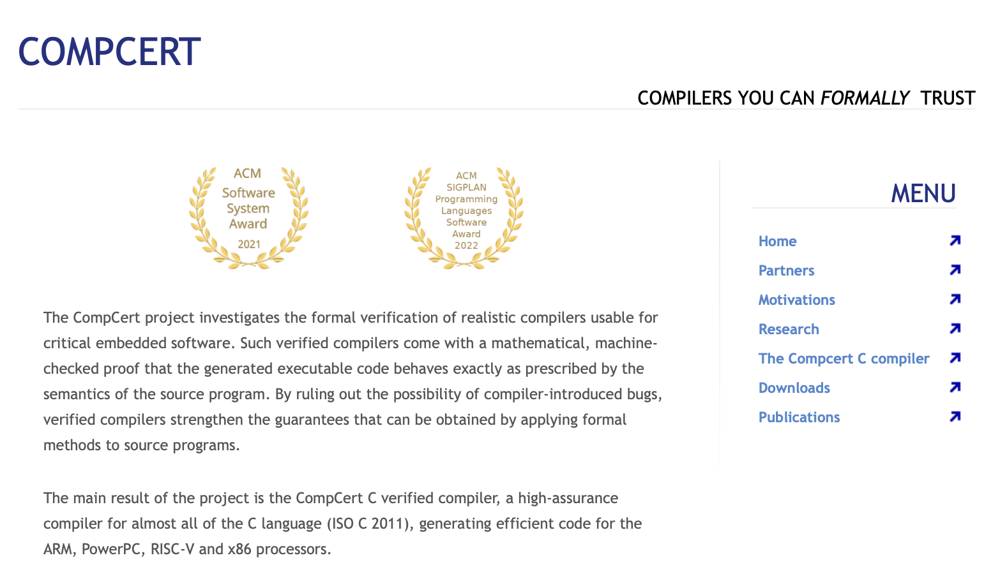
And the result is still niche: ~20% behind gcc -O2, with a licence for commercial use.
Scaling (Mathematics)
Navier–Stokes: OpenAI's claimed resolution of a Millennium Prize Problem, September 2026.
-
88 hours from first agent to proof
-
10,000 concurrent agents
-
616,000 lines of Lean
-
17 hours to formalize it
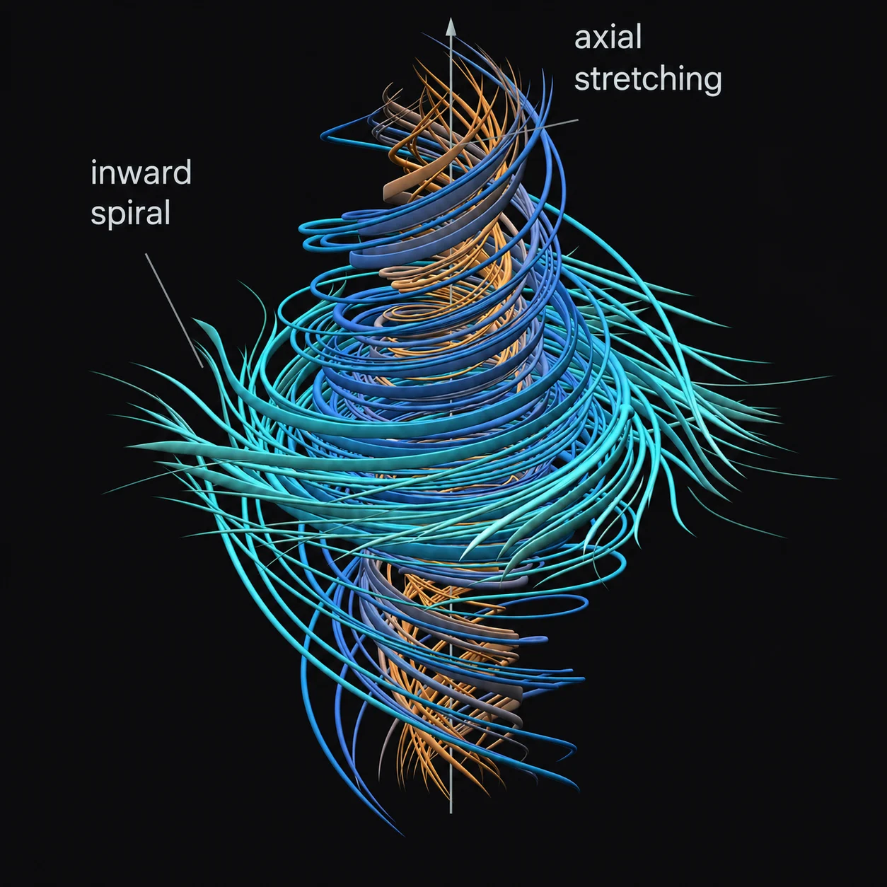
Open since 1934. Proved, and machine-checked, in under five days.
Scaling (Mathematics)
OpenAI's research catalog: a frontier model turned loose on open problems, October 2026.
-
~4,000 open problems posed
-
721 manuscripts in 373 families
-
26.1M lines of Lean
-
11× the size of Mathlib
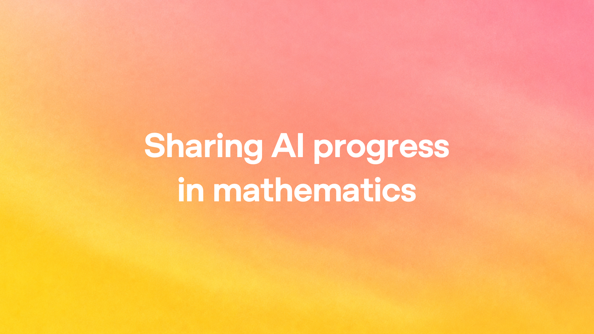
Mathlib took hundreds of contributors nearly a decade. Here, each result averaged about three hours of compute.
Scaling (Mathematics)
The classification of finite simple groups, formalized by Axiom, October 2026.
-
15,000 pages by ~100 mathematicians, over decades
-
24 days to formalize all of it
-
43.1M lines of Lean
-
34 serious deviations found in the literature
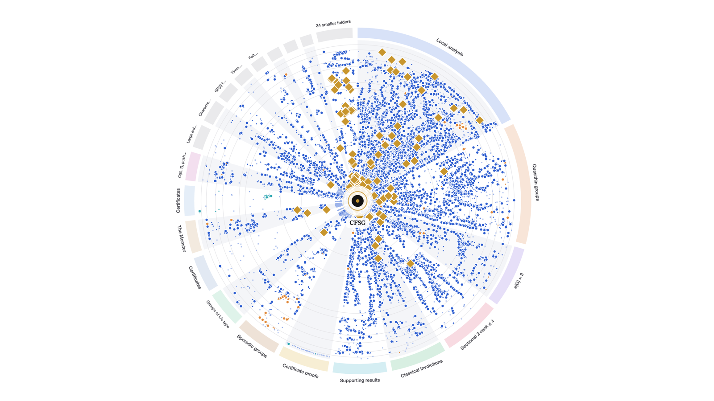
For scale: Feit–Thompson, one early step of the classification, took a team six years in Coq.
Scaling (Formal Verification)
Anthropic and Theorem: real C libraries, proved crash-free at the binary level, Oct 2026.
-
123 open-source libraries proved crash-free
-
180M lines of Rocq
-
weeks not person-years
-
100s of bugs found along the way

For scale: seL4 took 20 person-years to verify. Meanwhile, agents verified the xv6 kernel down to the hardware in 77 days.
The New Reality
-
Theorem provers (like Lean) have been niche, "experts only." are going mainstream.
-
Verification projects take months or years, with huge demands on expertise. take weeks, sometimes days.
-
Formal verification has been selectively applied, only to the most security-critical software. will be applied everywhere.
The Future
Lean will transform software development at every level as:
-
a performant functional programming language,
-
a powerful harness for LLMs,
-
a (near-)universally applicable verification tool, and
-
a universal specification language.
Outline
-
Performant Lean: verified code that keeps up with C and Rust
-
Autoresearch: a proof as the goal for an optimizing agent
-
LLMs as Compilers: agent-written assembly, proved correct
-
Conclusion: what this means for software
Performant Lean
Performant Lean
Classic objection: functional languages are slower than imperative, low-level languages like C and Rust.
The reason: functional languages don't have the same fine-grained control over memory as low-level languages.
The new reality: if your functional language has proofs, then you can make radical, agent-led optimization passes.
The result: verified Lean code that keeps up with C and Rust, and sometimes beats them.
Lean-Zip
DEFLATE in pure Lean, proved inflate (deflate x) = x, then optimised by agents.
-
4.57s vs 5.77s in Rust, on the 212 MB Silesia corpus
-
30% faster than Rust at the default level
-
2× faster than Rust at maximum compression
-
1 proof keeps every agent optimisation honest
Beats Rust's miniz_oxide and C's reference zlib at every level. Heavily optimised C (zlib-ng, libdeflate) is still faster.
Hex
Verified computer algebra in Lean, against the verified state of the art in Isabelle.
-
53× faster verified lattice reduction, worst case
-
7× faster verified lattice-based factoring
-
15% faster verified classical factoring
-
1st formally verified van Hoeij factorizer
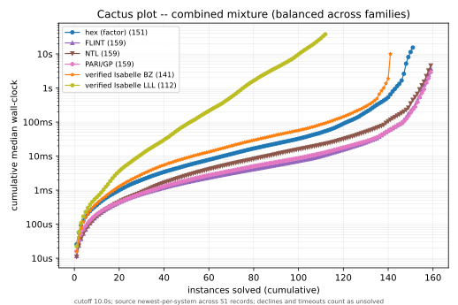
Not yet competitive with unverified C: about 5× FLINT on factoring, and 5–12× nauty on graph isomorphism.
CompPoly
Verified field and polynomial arithmetic for zero-knowledge proofs, against the Rust libraries they're used in.
-
0.74× Plonky3's time for a proved million-point NTT
-
1.07× Plonky3's latency for KoalaBear multiplication
-
0.93× Plonky3's time for the STARK commit step
-
0
sorrys across 12,489 declarations
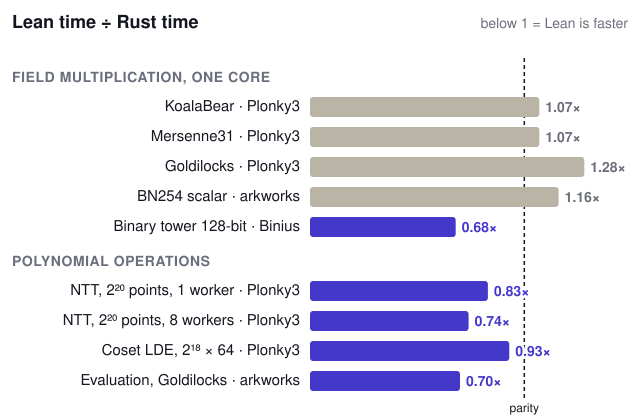
At the start of October, CompPoly's NTT took 15× as long as Plonky3's. Every number here comes with a correctness proof.
Gaps
The proofs held up. Here's what these projects still had to work around.
-
Low-level control. Core lacks fast packed-word access, so CompPoly backports it in C. No SIMD types.
-
Per-core speed. Hand-tuned C and Rust still win on one core.
-
A young runtime. Lean-Zip found a bug in Lean's own runtime.
-
Ecosystem. Async and HTTP just landed. No TLS, few libraries, hand-written C bindings.
-
Stability. Monthly releases, breaking changes, no LTS.
Autoresearch
Autoresearch
Give an agent a cost to minimise and a proof it must keep. Then let it loop, overnight.
-
cost ↓ what the agent minimises: time, cycles, code size
-
⊢ spec what it can never break: the proof must still check
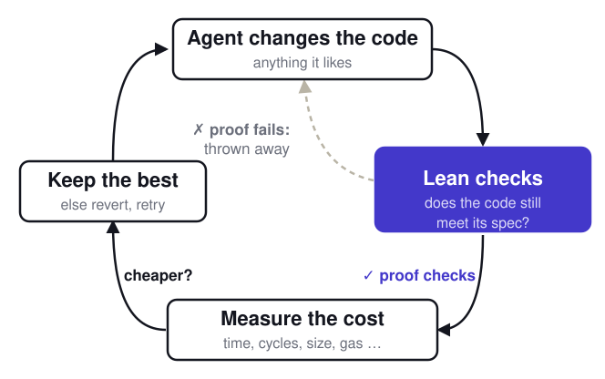
The main idea: a proof is the clearest goal you can give an agent. It can't game the score, so the only way to win is better code that's still correct.
Finished Competitions
better.codes
Prove that a hash-based proof system stays secure with fewer queries. The live companion to the Ethereum Foundation's $1M Proximity Prize.
-
+4.15 bits past the best soundness bound in the literature
-
81 records, each accepted by Lean's kernel
-
22 solvers, working with AI agents
-
6 weeks from first submission to current record

This isn't faster code; it's new mathematics. A better bound means fewer queries, so smaller and cheaper zero-knowledge proofs.
zk.golf
Build the smallest zero-knowledge circuit for a task, proved in Lean to match its spec.
-
7.4× smaller secp256k1 circuit than circom-ecdsa
-
2.6× smaller RSA check than zk-email's
-
1.9× smaller SHA-256 than xJsnark's
-
0 under-constrained circuits: each one is proved

A smaller circuit means a cheaper proof. And here, a smaller circuit can't be a broken one.
sig.golf
Shrink post-quantum signatures for Ethereum, with security and verification cost proved in Lean.
-
−51% signature bytes × verification cycles, in four weeks
-
−39% verification cycles: 11,573 to 7,007
-
−19% signature size: 6,404 to 5,195 bytes
-
313 records, each with a new Lean proof
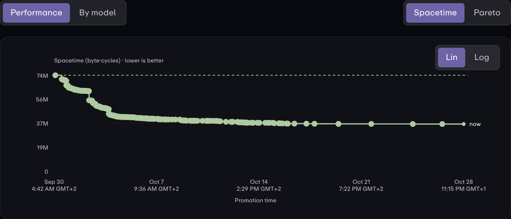
Each record is proved in Lean to keep 127-bit security and to stay within its RISC-V cycle bound.
precompile.fast
Replace two of Ethereum's built-in functions with ordinary EVM code, proved correct for every input.
-
3,600× less gas for MODEXP than the reference EVM code
-
31× less gas for the RIPEMD‑160 hash
-
773 Lean-checked records across both tracks
-
8 weeks since the first submission
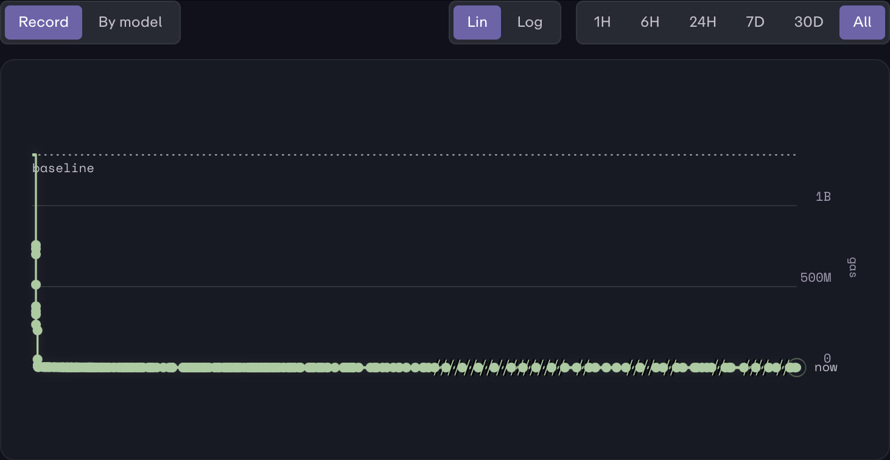
A cheaper version only counts if Lean proves it returns the right answer for every valid input, checked against the exact bytecode.
Takeaways
If you can:
-
constrain an LLM with formal proof,
-
state your goal extremely clearly,
-
define the correct cost function to minimize ...
... you can get world-leading results.
LLMs as Compilers
LLMs as Compilers
The usual pipeline: write high-level code, then trust the compiler to get the machine code right.
The new pipeline: give an agent a spec of the program and a spec of the machine, and have it write the machine code directly.
Lean checks the result: the code is proved against the spec, so there's no compiler left to trust.
evm-asm
Agent-written RISC-V, proved against the EVM spec.
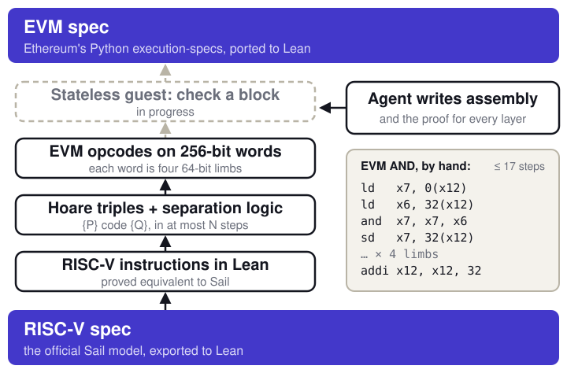
Every solid layer is a Lean theorem; checking a whole block is still being proved.
xmss-verify-asm → ots.golf
The same method, at small scale: an XMSS verifier, proved in one sitting.
-
9 h from first commit to the full proof
-
179 RISC-V instructions, proved for any hash function
-
−34% cycles the next day, from autoresearch
-
670× fewer cycles on ots.golf in 10 days: 229,113 → 341
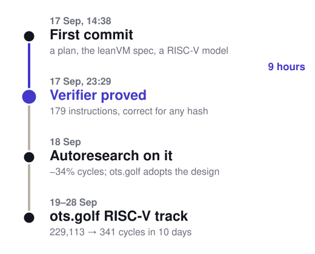
The next day, its machine design became the basis of ots.golf's RISC-V track.
evm-asm → flapjack
At EVM scale, we stopped hand-writing assembly and ported a verified compiler to Lean.
evm-asm: verified assembly, Feb–Sep
-
42,676 commits
-
1.25M lines of Lean
-
29k theorems
-
68/85 EVM opcodes proved
flapjack: verified compiler, 8 weeks
-
27,900 commits
-
1.08M lines of Lean
-
24k theorems
-
100% of 33,614 Ethereum tests passed
flapjack is CakeML's verified Pancake compiler, ported to Lean. The guest is now written in Pancake instead of assembly.
Machine-Checked ✅
Skip the compiler question: prove the binary itself correct.
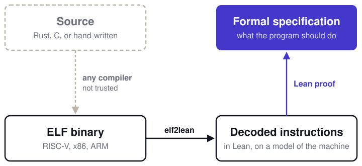
The binary can come from any compiler, or be optimised by hand. What's trusted: the machine model, the loaded image, and Lean's kernel.
Assembly-level Code
These experiments have shown:
-
agents can write assembly-level code and prove it correct
-
assembly can be customized and optimized
Limitations right now:
-
scalability (Lean build times)
-
the formal specification
Conclusion
Conclusion
Lean is more than a proof language. It is:
-
a performant functional programming language,
-
a powerful harness for LLMs,
-
a (near-)universally applicable verification tool,
-
a universal specification language.
Predictions
A few predictions:
-
Lean's super-powers let us write:
-
the most performant code we've ever written, and
-
the most secure code we've ever written.
-
-
Formal proof will be a standard fixture of languages, and of codebases.
The obvious question is ...
... do we just rewrite everything in Lean?
Thank You
Questions?